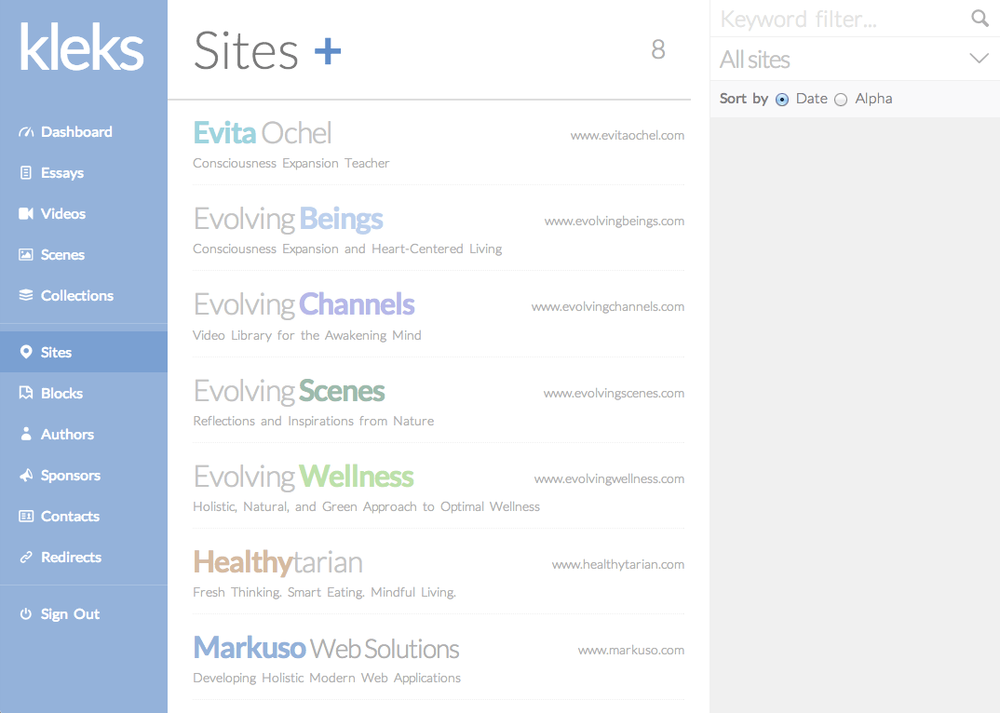
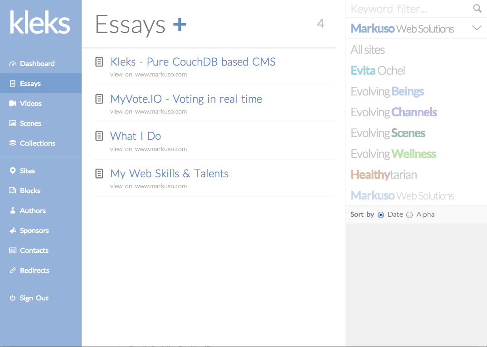
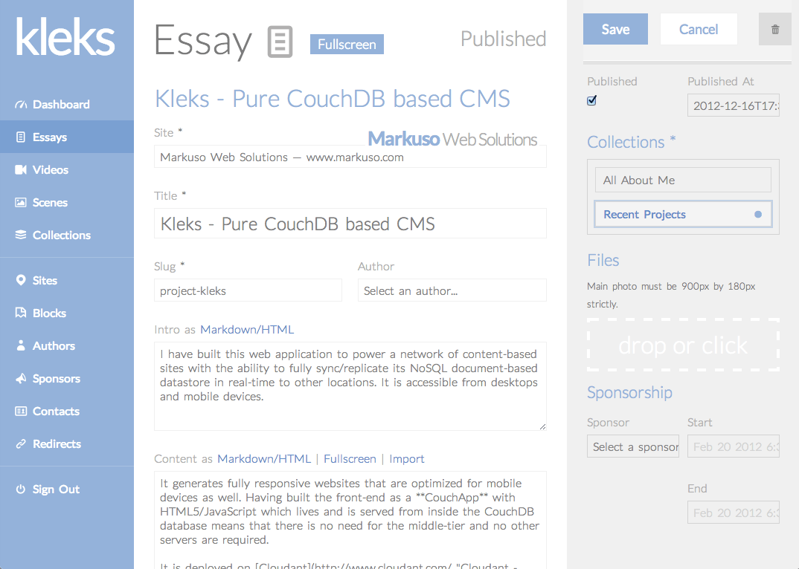
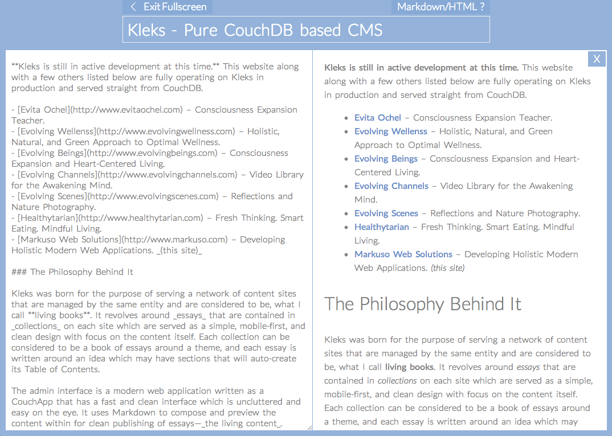

Kleks is a pure CouchDB based CMS written as a CouchApp using Kanso, Spine.js, CoffeeScript and Stylus. Supports multi-site setup and Markdown authoring. It is fully open-source with a MIT license.
Kleks can be used to power a network of content-based sites with the ability to fully sync/replicate its NoSQL document-based datastore, CouchDB, in real-time to other locations. The admin interface is accessible from desktops and mobile tablets at this time.
It generates fully responsive websites that are optimized for mobile devices as well. The front-end is built as a CouchApp with HTML5/JavaScript that lives and is served from inside the CouchDB database. It means that there is no need for the middle-tier and no other servers are required.
It has been successfully deployed for a network of content-based sites on Cloudant – a scalable hosted CouchDB cloud infrastructure – and replicates to multiple local and remote machines for backups and offline access.
Kleks is meant for moderate to experienced CouchDB developers that are interested in having a CouchApp solution for some of their content-based site deployments. They can use it as a starting point to customize their own solution for their clients.
Kleks was born for the purpose of serving a network of content sites that are managed by the same entity and are considered to be, what I call living books. It revolves around essays that are contained in collections on each site which are served as a simple, mobile-first, and clean design with focus on the content itself. Each collection can be considered to be a book of essays around a theme/topic, and each essay is written around an idea which may have sections that will auto-create its Table of Contents.
The admin interface is a modern web application written as a CouchApp that has a fast and clean interface which is uncluttered and easy on the eye. It uses Markdown to compose and preview the content within for clean publishing of essays — the living content.
There is also the concept of content sponsorships to monetize these living collections and essays with the ability to place the sponsor's name, link, ad image or video on individual essays or collections of choice, or even just place some Google AdSense for monitization. But only a single sponsor per page to keep interface non-cluttered and reader friendly.
Kleks was originally written for a network of sites listed below to migrate them from the common WordPress CMS, PHP, and MySQL to a completely CouchDB based solution without any other layers needed.



